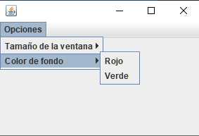

SUBTEMA 4.7 Manejo de Menús: JMenu, JMenuBar, JMenuItem
Para implementar un menú horizontal en la parte superior de un JFrame requerimos de un objeto de la clase JMenuBar, uno o más objetos de la clase JMenu y por último objetos de la clase JMenuItem.
Para la captura de eventos debemos implementar el interface ActionListener y asociarlo a los controles de tipo JMenuItem, de modo que se dispare al hacer clic en JMenuItem.

Ejercicio de ejemplo:
Componentes JMenuBar, JMenu y JMenuItem | Jairo García Rincón